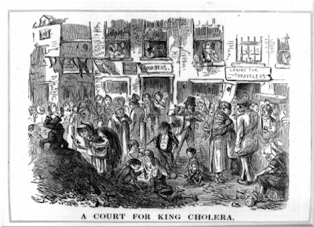
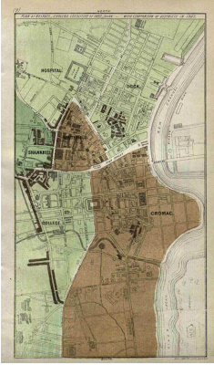

Arrival and medical understanding of cholera
On 28 February 1832, Bernard Murtagh, a 34-year-old cooper living in a lodging house on Quay Lane, Belfast—near the River Lagan—became violently ill...
He died between 7 and 8 p.m. that evening, some nineteen hours after becoming ill.

Cholera Mortality in Ireland
Across Ireland, around forty per cent of those who contracted cholera between 1832 and 1833 died...

Belfast’s Urban Environment
Nineteenth-century Belfast was Ireland’s only industrialised town...
The 1832 Epidemic in Belfast
The initial response was coordinated by the Police Commissioners and a Board of Health...

The 1848–49 Cholera Epidemic
By the mid-1840s, cholera had largely faded from public consciousness...
The 1848–49 epidemic resulted in approximately 3,538 cases and 1,163 deaths in Belfast...
While sanitary reform improved conditions, mortality remained high due to limited medical understanding.